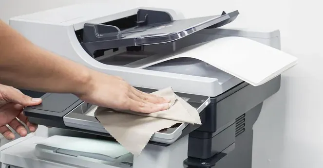
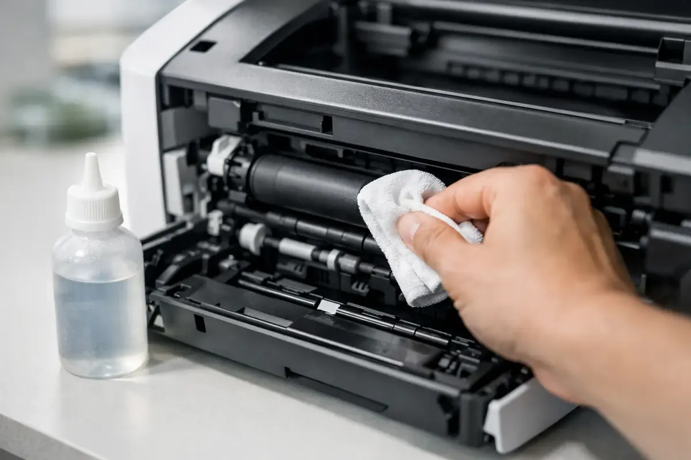

Printers
Printer Maintenance 101: How to Clean and Care for Your Printer
Learn a practical printer maintenance routine covering exterior cleaning, paper handling, inkjet printheads, laser components and troubleshooting.
Introduction: Why Printer Maintenance Matters
A printer is often overlooked until you experience issues like streaky prints, paper jams and connectivity issues. Regular maintenance can help prevent avoidable issues, help keep prints good quality and increase the efficiency of your supplies. It can also help spot any small issues early.
There will be differences in maintenance depending on whether you have an inkjet, laser or multifunction printer. Inkjets use liquid ink and a printhead, whereas a laser printer uses toner and imaging components. All printers will require a clean environment, correct paper and careful handling. However, there are differences to the internal cleaning of the printers. Always refer to your manual for your exact model.

1. Choose a Suitable Place
Ensure your printer is placed onto a firm, flat surface so you have space for your paper trays, output and airflow. Don’t expose the printer to direct sunlight, heat sources, high humidity and dust. Ensure there isn’t anything blocking the vents or anything placed on top of the printer.
Having your printer in a stable place will help prevent accidental movement, strain on the cables and paper feed issues. When using the printer in an office, ensure the printer is in a place where everyone has easy access to the paper trays and controls without having to push the printer forwards or twist any cables.
2. Clean the Outside
Always switch the printer off and unplug before beginning to clean. Gently wipe around the casing and controls with a soft lint free cloth. If your manufacturer allows you to use a slightly damp cloth, ensure it is well wrung out and don’t get any moisture into any vents, buttons or seams. Don’t spray any cleaning products directly onto the printer.
Don’t use any abrasive cloths, harsh chemicals or household cleaning products as this can damage the plastics, labels and screen. Wipe up any spills immediately. Don’t get any moisture into the paper feed or internal components. Ensure everything is completely dry before plugging back in.

3. Correct Paper
Using the right type of paper will help reduce paper feed issues and keep your prints good quality. Use the correct size, weight and type of paper your printer can handle. Ensure the paper is flat and dry. If possible use the paper still in its packaging. Paper can curl if it has been exposed to moisture.
Follow the instructions on your printer, if you need to fan the paper and ensure it is aligned. Don’t overfill the paper tray and don’t tighten the paper guides too much. Adjust the guides to fit the paper stack. Remove any damaged, curled or creased paper.
4. Clean Paper Feed
Small pieces of dust and paper can collect around the paper feed rollers and tray. Remove the paper tray and switch the printer off. Only use the cleaning method outlined in your manual. Some printers have a paper feed cleaning option on the control panel, whilst others will have specific lint free cloths dampened with water to clean certain paper feed rollers.
Don’t dig too far into the printer. Don’t force the rollers. Don’t use any household oils, lubricants or chemicals. If you find a torn piece of paper then follow the steps to clear a paper jam and ensure you only pull in the direction indicated. If you can’t get to it safely then request service.
5. Inkjet Printheads
Inkjet printers can suffer from blocked printheads. If you are experiencing missing lines or colours in your prints then print off a nozzle check pattern. If this shows any issues, use the standard cleaning option on your printer. Run through one cycle and then leave for the advised time. If you need to clean frequently this will use ink and may fill your maintenance tank or waste ink absorber.
Don’t use any household alcohols, scratch the nozzle plate or open up the printhead carriage unless the manufacturer provides a specific cleaning method. Some printers have replaceable printheads and some may need to be serviced. Using your printer regularly can help prevent it drying out however printing test pages unnecessarily uses up supplies.
6. Laser Printer Care
Laser printers will require different care. Toner is a fine dust and the imaging drum, transfer belt and fuser can be very sensitive. Follow the prompts on your printers display and service. Let the printer cool down and only open up any parts listed in the manual as safe to touch.
Don’t touch the imaging drum or transfer belt. Don’t blow any toner dust out with compressed air or use a regular household vacuum. If you spill any toner follow the manufacturers instructions on how to clean up or request service. Never open up the fuser, it can be hot.
7. Correct Replacement
Only use the exact model of cartridge/toner. Check the part number to ensure it will fit your printer, as some may look similar but won’t work. Keep your replacement cartridges sealed until you install them. Follow the instructions on the packaging to remove any protective covering.
Install your supplies carefully. Ensure the covers and locks are properly closed. Don’t force the cartridge into place. If your printer isn’t recognising your new supplies ensure they are fitted correctly, protected and compatible. Keep used cartridges out of the reach of children. If possible follow local recycling or return options.
8. Software Updates
Printer software can effect your connectivity, security and print quality. Use the official support page or update tool from your manufacturer to check for any updates to your drivers and firmware. Ensure you know the exact model and operating system. Don’t use third party driver websites as they may provide incorrect or bundled software.
Always ensure you have a stable power source and connection when updating your firmware. Don’t switch your printer off. If you are in a business environment, ensure you test on the correct device and follow your organisations IT process.
9. Secure Network
Network printers can save print jobs, address books and settings. Ensure your printer is connected to a secure Wi-Fi network. Change the default administrator login if possible. Limit access to management settings. If advised by the manufacturer or your IT administrator install any security updates and disable any unnecessary services.
If you are printing sensitive documents in an office, enable secure print or PIN if available. Ensure you collect your documents quickly. Maintenance should also include checking security settings.
10. Simple Routine
You don’t need to have a complicated routine. Simply wipe down the outside if it gets dusty. Check your paper trays when refilling. Check for any paper scraps after a jam. Check your prints are good quality. Only use nozzle checks and cleaning if required. Follow the manufacturers routine for your maintenance kit, rollers and any other replaceable parts.
If you are sharing the printer with others, ensure someone is responsible for checking the supplies and informing you of any regular jams. Keep notes of any error messages, cartridge changes and service dates. This can help identify issues such as a specific tray causing paper feed issues.
Troubleshooting Issues
Regular paper jams in the same place, grinding noise, burning smell, ink leaks, toner spills, regular error messages and sudden print quality issues can all be signs of an issue. If you see any smoke, smell an electrical smell or see any damage stop using the printer. Unplug if possible and request service by a qualified technician.
Don’t attempt to open up any power supplies, laser or sealed parts. A technician can investigate the rollers, sensors, printhead, imaging unit, fuser and control board using the correct methods. Provide them with the model number, error message and when the issue happens.
Conclusion
Overall a well maintained printer will have a clean environment, correct paper, careful replacement of supplies, sensible software updates and specific cleaning. Inkjets and lasers will require different internal care so follow your manufacturers instructions. Having a simple routine and paying attention to any issues can help improve reliability, keep your prints good quality and help prolong the life of your printer..
Need a hand with your printer or laptop?
Printerworld sells printers, laptops and genuine supplies, and repairs and services both. Bring in your model number and we will help you get it right.